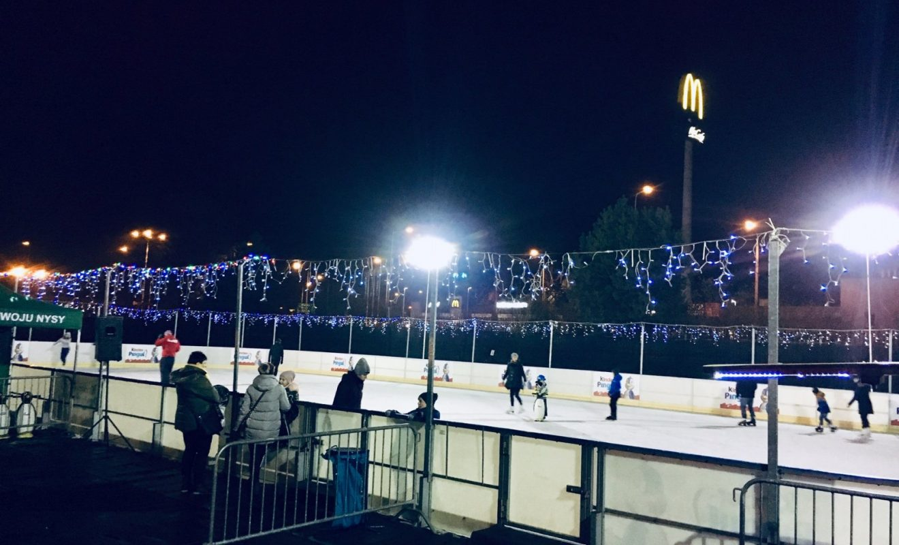

Lodowisko
 Od 1 grudnia 2009 roku mieszkańcy Nysy i okolic, po 20 latach przerwy mogą korzystać z profesjonalnego lodowiska, które zostało zainstalowane na kortach tenisowych stadionu miejskiego przy ul. Kraszewskiego. Do dyspozycji mieszkańców – Agencja Rozwoju Nysy udostępniła płytę lodowiska sztucznie mrożonego o powierzchni 20m x 40m. Wokół tafli lodowiska znajdują się bandy samokotwiące w lodzie o wysokości 1,2 m. Przy lodowisku znajdują pomieszczenia kasy, ogrzewanej szatni wraz z wypożyczalnią łyżew na 115 par oraz punkt gastronomiczny. System ziębniczy tafli lodowiska spełnia warunki techniczne pozwalające na korzystanie z lodowiska przy temperaturze powietrza do +10°C. Obiekt jest czynny w sezonie zimowym w zależności od warunków temperaturowych.